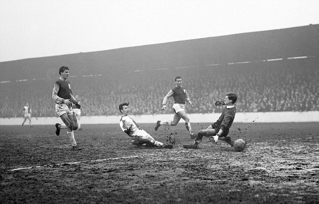
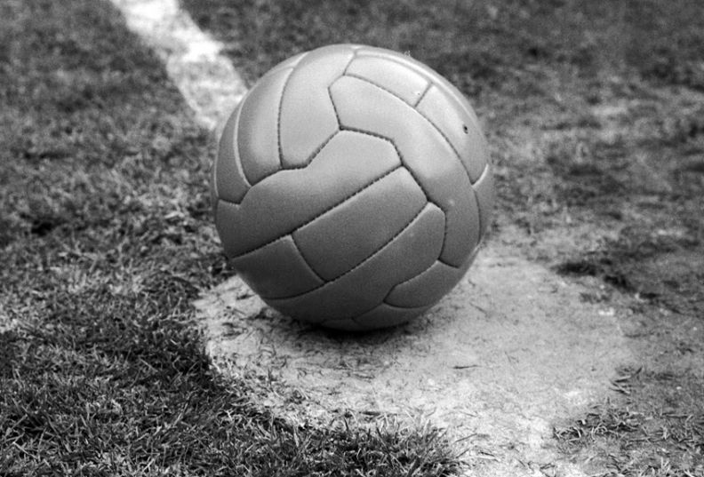

Povijest nogometa
Nogomet je jedan od najpopularnijih i najraširenijih sportova na
svijetu, a njegova povijest seže u 19. stoljeće u Engleskoj. Tada
su se počeli razvijati različiti oblici nogometnih igara, no
pravila su bila nejasna i često su se razlikovala od grada do
grada. Godine 1863. osnovan je Engleski nogometni savez (FA) koji
je standardizirao pravila igre.
Prvi službeni nogometni susret odigran je 1872. godine između Engleske i Škotske. Nogomet je ubrzo postao popularan u Europi i u svijetu te se počeo organizirati u različita natjecanja. Svjetsko prvenstvo u nogometu prvi put je održano 1930. godine u Urugvaju, a danas je to najvažnije i najprestižnije natjecanje u nogometu.
Prvi službeni nogometni susret odigran je 1872. godine između Engleske i Škotske. Nogomet je ubrzo postao popularan u Europi i u svijetu te se počeo organizirati u različita natjecanja. Svjetsko prvenstvo u nogometu prvi put je održano 1930. godine u Urugvaju, a danas je to najvažnije i najprestižnije natjecanje u nogometu.

Nogometni klubovi su također važan dio povijesti nogometa. Prvi
nogometni klub osnovan je u Sheffieldu u Engleskoj 1857. godine.
Danas postoje tisuće nogometnih klubova diljem svijeta, a neki od
najpoznatijih su Real Madrid, Barcelona, Manchester United, Bayern
München, Juventus i mnogi drugi.
Nogomet je tijekom godina postao ne samo sport, već i važan dio kulture. Ljudi diljem svijeta su strastveni navijači svojih klubova i reprezentacija te se nogometni mečevi često smatraju događajima od nacionalnog značaja.
Nogomet je tijekom godina postao ne samo sport, već i važan dio kulture. Ljudi diljem svijeta su strastveni navijači svojih klubova i reprezentacija te se nogometni mečevi često smatraju događajima od nacionalnog značaja.
